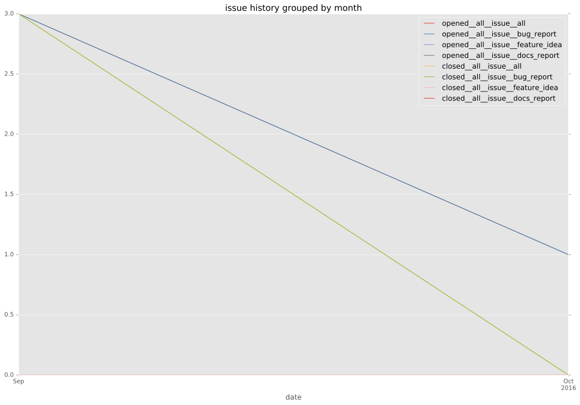
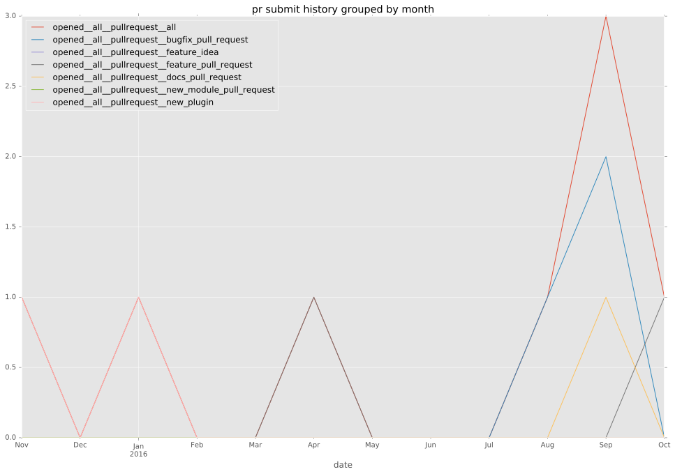

total issue counts
feature pull request: 1
pullrequest: 9
docs pull request: 1
bugfix pull request: 5
issue: 5
new plugin: 2
bug report: 5
issue history

pullrequest history

days open by issue type
bugfix pull request
count: 10
std: 4.63800723491
min: 0
max: 11
median: 0.0
mean: 2.2
all
count: 21
std: 9.31997343139
min: 0
max: 35
median: 0.0
mean: 5.80952380952
pullrequest
count: 0
std: nan
min: nan
max: nan
median: nan
mean: nan
docs pull request
count: 2
std: 0.0
min: 2
max: 2
median: 2.0
mean: 2.0
feature pull request
count: 1
std: nan
min: 0
max: 0
median: 0.0
mean: 0.0
issue
count: 0
std: nan
min: nan
max: nan
median: nan
mean: nan
new plugin
count: 3
std: 12.124355653
min: 14
max: 35
median: 14.0
mean: 21.0
bug report
count: 5
std: 9.50263121456
min: 0
max: 23
median: 5.0
mean: 6.6
closures grouped by total days open